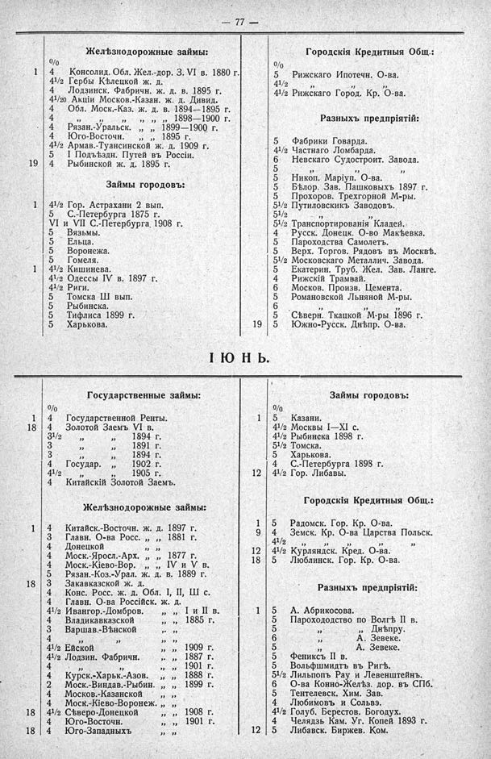

Лист источника 123
Скан

Распознанный текст
— 77 —
Желѣзнодорожные займы:
о/о
1 4 Консолид. Обл. Жел.-дор. З. VI в. 1880 г.
41/2 Гербы Кѣлецкой ж. д.
4 Лодзинск. Фабричн. ж. д. в. 1895 г.
41/20 Акціи Москов.-Казан. ж. д. Дивид.
4 Обл. Моск.-Каз. ж. д. в. 1894—1895 г.
4 ” ” ” ” 1898—1900 г.
4 Рязан.-Уральск. ” ” 1899—1900 г.
4 Юго-Восточн. ” ” 1895 г.
41/2 Армав.-Туансинской ж. д. 1909 г.
5 I Подъѣздн. Путей въ Россіи.
19 4 Рыбинской ж. д. 1895 г.
Займы городовъ:
1 41/2 Гор. Астрахани 2 вып.
5 С.-Петербурга 1875 г.
VI и VII С.-Петербурга 1908 г.
5 Вяземы.
5 Ельца.
5 Воронежа.
5 Гомеля.
1 41/2 Кишинева.
41/2 Одессы IV в. 1897 г.
41/2 Риги.
5 Томска III вып.
5 Рыбинска.
5 Тифлиса 1899 г.
5 Харькова.
Городскія Кредитныя Общ.:
о/о
5 Рижскаго Ипотечн. О-ва.
41/2 ” ” ”
41/2 Рижскаго Город. Кр. О-ва.
Разныхъ предпріятій:
5 Фабрики Говарда.
41/2 Частнаго Ломбарда.
6 Невскаго Судостроит. Завода.
5 ” ” ”
5 Никоп. Маріуп. О-ва.
5 Бѣлор. Зав. Пашковыхъ 1897 г.
5 Прохоров. Трехгорной М-ры.
51/2 Путиловскихъ Заводовъ.
51/2 ” ”
51/2 Транспортированія Кладей.
4 Русск. Донецк. О-во Макѣевка.
5 Пароходства Самолетъ.
5 Верх. Торгов. Рядовъ въ Москвѣ.
51/2 Московскаго Металлич. Завода.
5 Екатерин. Труб. Жел. Зав. Ланге.
4 Рижскій Трамвай.
6 Москов. Произв. Цемента.
5 Романовской Льняной М-ры.
6 ” ” ”
5 Сѣверн. Ткацкой М-ры 1896 г.
19 5 Южно-Русск. Днѣпр. О-ва.
І Ю Н Ь.
Государственные займы:
о/о
1 4 Государственной Ренты.
18 41/2 Золотой Заемъ VI в.
31/2 ” ” 1894 г.
3 ” ” 1891 г.
3 ” ” 1894 г.
4 Государ. ” 1902 г.
41/2 ” ” 1905 г.
4 Китайскій Золотой Заемъ.
Желѣзнодорожные займы:
1 4 Китайск.-Восточн. ж. д. 1897 г.
3 Главн. О-ва Росс. ” ” 1881 г.
4 Донецкой
4 Моск.-Яросл.-Арх. ” ” 1877 г.
4 Моск.-Кіево-Вор. ” ” IV и V в.
5 Рязан.-Коз.-Урал. ж. д. в. 1889 г.
18 3 Закавказской ж. д.
4 Конс. Росс. ж. д. Обл. I, II, III с.
4 Главн. О-ва Россійск. ж. д.
41/2 Ивангор.-Домбров. ” ” I и II в.
4 Владикавказской ” ” 1885 г.
3 Варшав.-Вѣнской ” ”
4 ” ” ” ”
41/2 Ейской ” ” 1909 г.
41/2 Лодзин. Фабричн. ” ” 1887 г.
4 ” ” ” ” 1901 г.
4 Курск.-Харьк.-Азов. ” ” 1888 г.
2 Моск.-Виндав.-Рыбин. ” ” 1899 г.
4 Москов.-Казанской
4 Моск.-Кіево-Воронеж. ” ”
18 41/2 Сѣверо-Донецкой ” ” 1908 г.
4 Юго-Восточн. ” ” 1901 г.
18 4 Юго-Западныхъ ” ”
Займы городовъ:
о/о
1 5 Казани.
41/2 Москвы I—XI с.
41/2 Рыбинска 1898 г.
51/2 Томска.
5 Харькова.
4 С.-Петербурга 1898 г.
12 41/2 Гор. Либавы.
Городскія Кредитныя Общ.:
1 5 Радомск. Гор. Кр. О-ва.
9 4 Земск. Кр. О-ва Царства Польск.
41/2 ” ” ” ”
12 41/2 Курляндск. Кред. О-ва.
18 5 Люблинск. Гор. Кр. О-ва.
Разныхъ предпріятій:
1 5 А. Абрикосова.
5 Парохододство по Волгѣ II в.
5 ” Днѣпру.
6 ” А. Зевеке.
5 ” А. Зевеке.
5 Фениксъ II в.
5 Вольфшмидтъ въ Ригѣ.
51/2 Лильпопъ Рау и Левенштейнъ.
6 О-ва Конно-Желѣз. дор. въ СПБ.
5 Тентелевск. Хим. Зав.
4 Любимовъ и Сольвэ.
41/2 Голуб. Берестов. Богодух.
4 Челядзь Кам. Уг. Копей 1893 г.
12 5 Либавск. Биржев. Ком.